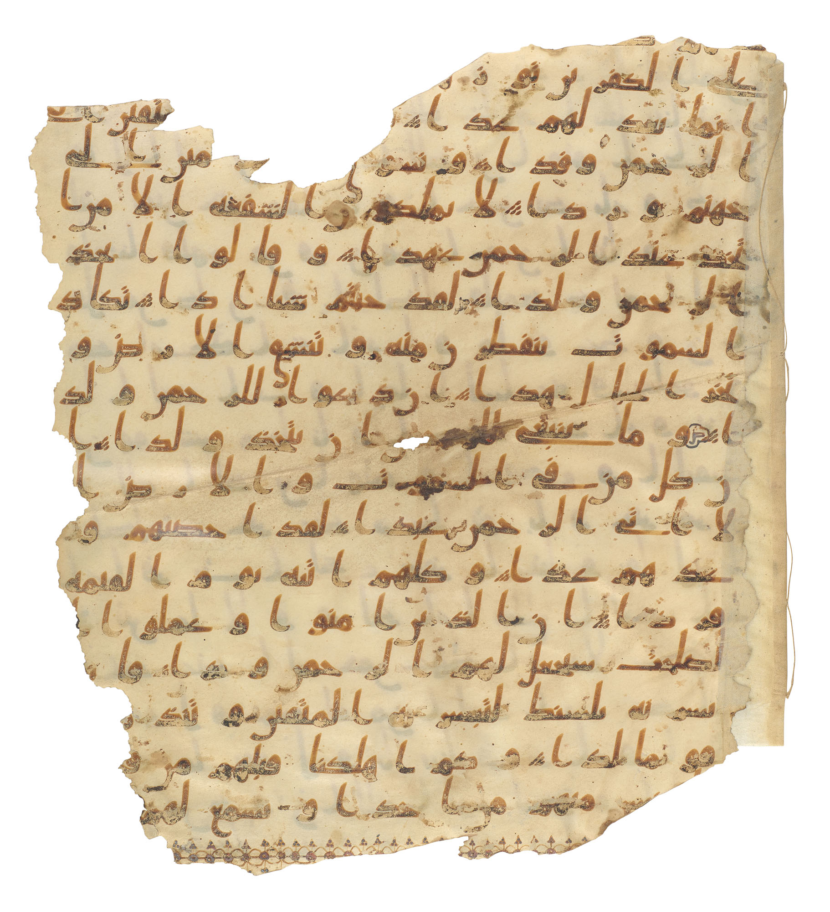

Un mismo elenco recorre las tres tradiciones abrahámicas. Pero cada una viste a sus personajes con un traje distinto. Galería comparada de figuras compartidas.
Hemos visto que el Corán comparte relatos con la Biblia. Ahora afinemos la mirada sobre los personajes mismos: no cómo se cuenta tal historia, sino quién es cada figura en judaísmo, cristianismo e islam, lado a lado. El ejercicio revela una familia de tradiciones que comparte el reparto pero reparte los papeles de forma distinta —y en las diferencias se lee la identidad de cada una—.

El primer patriarca, padre del pueblo de Israel a través de Isaac. Con él Dios sella la alianza y la promesa de la tierra.
Padre de la fe, modelo del creyente que confía en Dios. Pablo lo presenta como padre espiritual de todos los que creen.
Ibrahim, el hanif por excelencia: el monoteísta puro, anterior a judíos y cristianos. Padre de los árabes por Ismael, y constructor de la Kaaba.
Abraham es el eje del que dependen las tres. Por eso se las llama “religiones abrahámicas”. Pero fíjate en el matiz decisivo: para el islam, Abraham no es ni judío ni cristiano —es anterior a ambos—, lo que le permite reclamarlo como el primer musulmán en el sentido literal de “el que se somete a Dios”. La misma figura, tres genealogías espirituales distintas.
No es el Mesías ni una figura de su Escritura. El judaísmo sigue esperando al Mesías; Jesús queda fuera de su relato sagrado.
El centro absoluto: Hijo de Dios, Dios encarnado, salvador que muere y resucita. Todo gira en torno a él.
Un profeta grandísimo, Mesías, nacido de virgen, obrador de milagros —pero humano, no divino—. Anuncia la venida de Mahoma.
Jesús es el gran divisor de la familia abrahámica. Nota la asimetría fascinante: el cristianismo lo hace Dios; el islam lo venera como profeta pero rechaza su divinidad; el judaísmo no lo incorpora. Es la figura donde las tres tradiciones marcan con más claridad sus fronteras. Y sin embargo, dos de las tres lo consideran sagrado —solo que de maneras irreconciliables—.
Uno de los arcángeles principales, mensajero e intérprete de visiones (aparece en Daniel, de la serie del apocalipsis).
El ángel de la Anunciación: anuncia a María el nacimiento de Jesús (Lucas 1).
Yibril, el ángel supremo: es quien transmite el Corán entero a Mahoma. El vínculo directo entre Dios y el profeta.
El mismo arcángel que interpretaba visiones en Daniel y anunciaba a María es quien dicta el Corán. Toda la corte celestial que estudiamos en la segunda serie —ángeles, mensajeros— reaparece en el islam, que además desarrolla su propia angelología y hereda figuras como Iblís (el diablo, emparentado con el diábolos griego) y los yinn.
No solo los profetas se comparten: también los ángeles. El Gabriel que anuncia a María en el Evangelio es el mismo Yibril que dicta el Corán a Mahoma. Las tres tradiciones pueblan el cielo con el mismo elenco de seres, heredado del judaísmo antiguo.
Puestos en fila, estos retratos cuentan una historia clara. Las tres tradiciones no son religiones ajenas que casualmente se parecen: son ramas de un mismo tronco que comparten personajes, escenarios y vocabulario celeste, y que se distinguen por cómo reparten los papeles protagónicos —sobre todo el de Jesús— y por quién es el último profeta.
Es una familia en el sentido pleno: con un antepasado común (Abraham), parientes reconocibles (los profetas, los ángeles), y también las tensiones profundas que solo existen entre quienes comparten sangre. Las diferencias son reales e importan; pero se recortan sobre un fondo de continuidad que es imposible ignorar una vez que se ve.
Las caracterizaciones de cada figura en las tres tradiciones reflejan sus posiciones mayoritarias y son verificables en sus textos y teologías respectivas. El papel de Yibril (Gabriel) como transmisor del Corán, Ibrahim como hanif, e Iblís como figura del diablo son datos establecidos del islam.
Simplificación consciente: dentro de cada tradición hay diversidad interna (corrientes místicas, minoritarias, históricas) que una galería comparada no puede recoger. Se presentan las posiciones centrales, no las únicas. La relación de Iblís con el diábolos griego es etimológica y conceptual, señalada por los estudiosos.
Este artículo compara tradiciones vivas con respeto, describiendo lo que cada una sostiene sin arbitrar entre ellas.